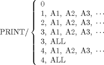

| Chapter 11. Input/Output Statements in the APT Language | ||
|---|---|---|
 |  | |
| Chapter 11. Input/Output Statements in the APT Language | ||
|---|---|---|
| | | |
Table of Contents
The APT language provides certain input/output functions that can be initiated by a part program statement. For instance, the results of geometric definitions can be printed out using the PRINT statement. These same results can be preserved for later processing by using the PUNCH and READ statements.
The general format of the PRINT statement is as follows.

PRINT/ 0
Causes the page to be ejected.
PRINT/ 1, A1, A2, A3, ...
Causes the canonical forms of the surfaces or scalars A1,A2,A3, etc., to be printed in hexadecimal format.
PRINT/ 2, A1, A2, A3, ...
Causes the quantities A1, A2, A3, etc., to be printed (each one starts on a new line and occupies one of more lines of print). The quantities A1, A2, A3, etc., are not identified as they are printed--only the numeric values associated with the quantities are printed.
For a discussion of the type of quantities processed, and the results, see the next format.
PRINT/ 3, A1, A2, A3, ...
Causes the quantities A1, A2, A3, etc., to be printed (each one starts a new line and occupies one of more lines of print).
The quantities A1, A2, A3, etc., are identified as they are printed out. The identification consists of quantity name, subscript (enclosed in parentheses), type of quantity (scalar or surface), and number of parameter values associated with this particular quantity.
The type of quantities processed are:
A number (identified as a scalar)
An unsubscripted scalar variable (identified as scalar variable with zero subscript)
A subscripted scalar variable (identified as scalar variable with nonzero subscript)
An unsubscripted surface variable (identified as surface variable with zero subscript) that does not represent a large surface
A subscripted surface variable (identified as surface variable with nonzero subscript) that does not represent a large surface
If the quantity takes on any other definition or value, or has not yet been defined, the PRINT classes the quantity as undefined.
PRINT/ 3, ALL
Causes all the scalar and surface variables currently defined to be printed using the print format described for PRINT/3,A1,A2,A3,---
PRINT/ 4, A1, A2, A3, ...
Causes the quantities A1,A2,A3, etc., to be printed and punched. The print format and operation is identical to that of PRINT/ 3, A1, A2, A3, etc., and the punch operation is identical to that of PUNCH/ 1, A1, A2, A3, etc., statement. The canonical forms of large surfaces (TABCYLs and rules surfaces) whose symbol appears in the list will be punched but not printed.
PRINT/ 4, ALL
Causes all the scalar and surface variables currently defined to be printed and punched using the print format described for PRINT/ 3, A1, A2, A3, ... and the punch format described for PUNCH/ 1, ALL. Large surfaces will be punched but not printed.
The TITLES statement permits labeling of the printed output. The TITLES statement is defined as follows.
TITLES (string of up to 66 alphanumeric characters)
The string of characters following TITLES in the statement is printed immediately at the time the statement is executed.
The TITLES statement also permits an option that shifts the printout on the output. If the six characters in columns 7 through 12 contain the word RIGHT preceded by a blank character, the alphanumeric string of characters in columns 13 through 72 is shifted 66 characters to the right when printed.
Whenever a PRINT statement occurs in a part program, the printing usually occurs immediately after the PRINT statement. However, if the PRINT statement is in a LOOPST-LOOPND group of statements, printing does not occur until the LOOPND statement is encountered. Thus, a part programmer can construct a print block for purposes of tabulation, etc., by enclosing the PRINT statements in a print loop. For example:
...
LOOPST
PRINT/ 0
TITLES ...
PRINT/ 3, A, B, C, D(1), E(4), ...
PRINT/ 3, F, G
LOOPND
...(Printing occurs after LOOPND and on the next page, headed by TITLES statement)
If the LOOPST-LOOPND statements were not present, printing would occur immediately after each PRINT statement; therefore, the APT part program statements would be printed interspersed with the desired output.
The PRINT statement, as described in the preceding sections, causes printing to be executed when the statement is encountered. There is an alternate form that causes the canonical forms of non-large surfaces (surfaces other than RLDSRF or TABCYL) to be printed out as they are calculated. This printout will include nested unnamed surfaces and will be according to the format specified for the PRINT/3 option. The format of this alternate form is:
All of the canonical forms will be printed out according to the above-referenced format, from the PRINT/ON statement to the PRINT/OFF statement.
| | | |
| Chapter 10. Sample Part Program Output |  | 11.2. The PUNCH Statement |